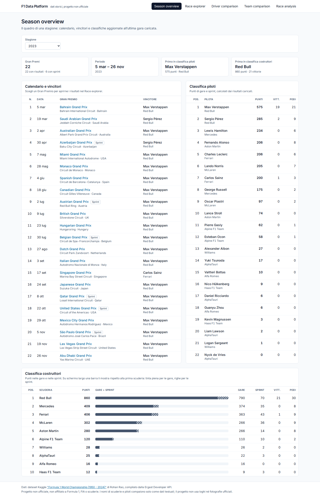
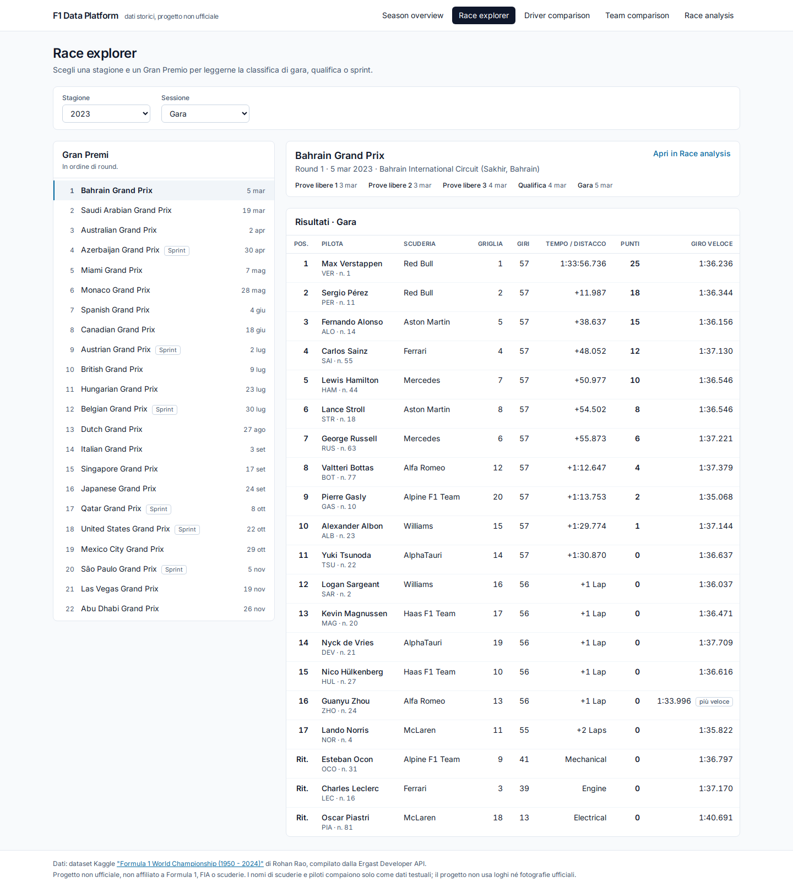
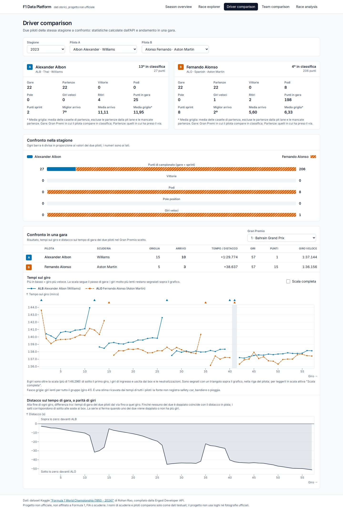
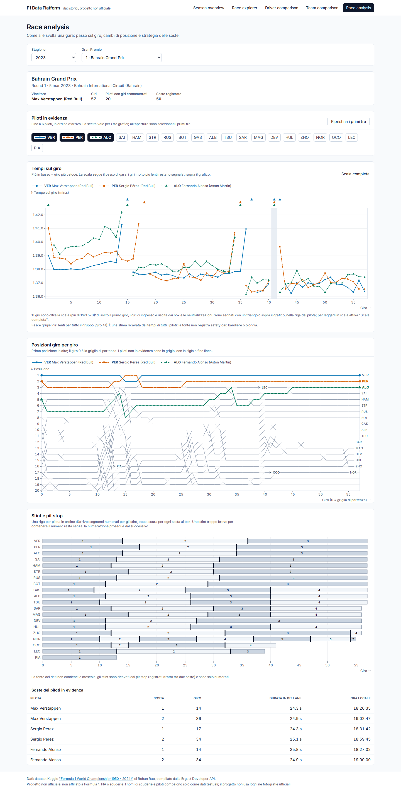

F1 Data Platform
End-to-End Data Pipeline & Analytics Platform
A reproducible pipeline takes the raw CSV files of a public Formula 1 dataset into a real relational model on PostgreSQL. A Spring Boot REST API computes standings and statistics on the database, and a web dashboard makes them explorable. The whole system starts with a single docker compose up.
- Role
- Solo project, design to delivery
- Year
- 2026
- Status
- v1 complete
- Runs with
- Docker Compose
At a Glance
From 14 raw CSV files to a queryable product.
589k
timed laps loaded from the full 1950–2024 dataset
12
relational tables from 4 Flyway migrations
15
read-only REST endpoints, documented with OpenAPI
400+
automated tests, plus 38 end-to-end acceptance tests
The Challenge
The source data is not ready for analysis.
The subject is motor racing, but the work is on the data. Each quirk of the source required a modelling decision or a transformation rule, documented and covered by tests.
-
Missing values written as
\N, or as0for the starting grid. -
Times stored as text (
m:ss.mmm), sometimes next to a millisecond column and sometimes not. - A whole race weekend packed into one row with up to twelve date and time columns.
- Race and sprint results in two files with independent numbering; 85 repeated race–driver pairs from shared cars in historical seasons.
Architecture
Four services, one command.
-
Raw CSV
Kaggle / Ergast dataset, or the versioned 2022–2024 sample
-
Pipeline
Python: validate, normalise, write deterministic Parquet, load with upserts
-
PostgreSQL 17
12 tables, keys and constraints, indexes for analytical queries
-
REST API
Spring Boot 3 on Java 21; aggregations in SQL, OpenAPI docs
-
Dashboard
Five views with filters and charts, no framework, no bundler
Highlights
Engineering choices that hold up.
Reproducible by design
Two runs on the same input produce byte-identical Parquet files: rows sorted by key, writer options pinned, no timestamps.
Idempotent loading
COPY into temporary tables and upserts in a single transaction: rerunning creates no duplicates, an error leaves no half-loaded data.
No row lost silently
Every rejected row is reported with file, line and reason; per-race counts in the database match the CSV files.
A real relational model
Weekends split into sessions, race and sprint results in one table, times as integer milliseconds, stints derived from pit stops.
Server-side aggregations
Standings and statistics computed in SQL with a median response time of a few milliseconds, recomputed from the CSV files as a check.
Tested end to end
pytest, JUnit with Testcontainers and Playwright, plus acceptance tests that start the whole stack from a clean clone.
Screenshots
The dashboard.
Click an image to see the full page. The dashboard interface is in Italian.








Tech Stack
What it is built with.
- Data
- Python PyArrow / Parquet PostgreSQL Flyway
- Backend
- Java 21 Spring Boot 3 OpenAPI
- Frontend
- JavaScript Tailwind CSS Observable Plot
- Testing & Ops
- Docker Compose pytest JUnit + Testcontainers Playwright
How It Was Built
Tests first, then a team of agents.
I developed the project with Claude Code as a team of specialised agents: data architect, pipeline, backend and frontend developers, technical writer and an independent reviewer, coordinated by a main agent. The acceptance tests were written and approved first, then locked so no agent could change them, and every milestone closed only after the reviewer's sign-off. The full setup is in the repository.
Data: Kaggle dataset “Formula 1 World Championship (1950–2024)” by Rohan Rao, compiled from the Ergast Developer API. Unofficial project, not affiliated with Formula 1, the FIA or any team.
Back to all projects
lumon2004.github.io/lumon2004